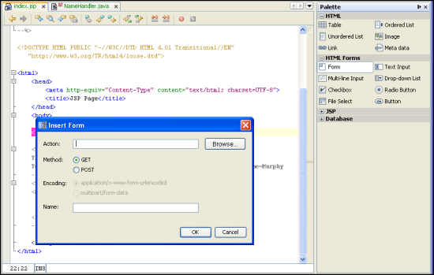

NetBeans Tutorial Template - The name here should match the title tag
Contributed and maintained
by
your name hereThis template shows you how to write a tutorial. Don't just save this
web page to use the template. Instead, download it from this
location. When you are done, please zip up your HTML file and any images/binary
files and send it to webmaster@netbeans.org.
Use this section to introduce the tutorial. Focus on the following:
- What technologies are involved and why they're exciting/useful.
- How NetBeans supports these technologies.
- A quick summary of the tasks the tutorial covers.
This document takes you through the basics of using NetBeans IDE 5.0 to develop
web applications. This document is designed to get you going as quickly as possible.
For more information on working with NetBeans IDE, see the Support
and Docs page on the NetBeans website.
You create, deploy, and execute a simple web application. The application uses
a JavaServer Pages™ page to ask you to input your name. It then uses a
JavaBeans™ component to persist the name during the HTTP session and repeats
the name on another JavaServer Pages page.
Expected duration: xxx minutes
Prerequisites
Note the knowledge that the user needs to complete the tutorial. If there
are better resources for beginners, link to them.
This tutorial assumes you have some basic knowledge of, or programming experience
with, the following technologies.
Software Needed for the Tutorial
List all the software that is needed and where to download them. Note
that for NetBeans builds, just link to http://www.netbeans.info/downloads/index.php.
If there is an example project the user builds on, link to it here as well.
Just include the sample project in the zip file you send the web team, we
will post it and correct the link.
Before you begin, you need to install the following software on your computer:
Notations Used in the Tutorial
If you use any variables, like <NETBEANS_HOME> or <PROJECT_HOME>,
list them here.
- <NETBEANS_HOME> - the NetBeans IDE installation directory
- <PROJECT_HOME> - directory that contains the project you create.
Tutorial Exercises
Exercise 0: Installing and Configuring the Tutorial
Environment
List anything the user has to do before they start the tutorial, above and
beyond installing the software. Examples are:
- Populating a database
- Registering the appropriate application server
- etc.
The bundled Tomcat Web Server is registered with the IDE automatically. However,
before you can deploy to the SJS Application Server, JBoss, or WebLogic, you
have to register a local instance with the IDE. If you installed the NetBeans
IDE 5.0/SJS Application Server bundle, a local instance of the SJS Application
Server is registered automatically. Otherwise, take the following steps:
- Choose Tools > Server Manager from the main window.
- Click Add Server. Select the server type and give a name to the instance.
Then click Next.
- Specify the server information, the location of the local instance of the
application server, and the domain to which you want to deploy.
Setting Up a Web Application Project
State the goal of this exercise. If necessary, give any background information
about the task, such as explaining new terms and technologies.
The goal of this exercise is to create and configure a web application project,
including specifying the file layout of the project and the server to which
the application is deployed.
Creating a New Web Application Project
Guidelines for outlining steps:
- Put one step on each line.
- Put a <P> tag before each li to provide spacing between steps.
- Don't make the names of menus, commands, or buttons bold.
- Put all code, files, and directories in <TT>
- Put all code snippets of one line or longer in <PRE CLASS="examplecode">.
Try to break it up so that the maximum width is less than 600 pixels. Note
that users will often copy and paste directly from the code, so don't use
hidden tags like <BR> and color tags, since they would then end up
in the pasted code and cause compilation errors.
- Images should be in their own <P> tag inside of the containing
li tag. They should be center-aligned and no wider than 600 pixels. You
must provide alt text for the image. Images should be saved in PNG format
and should have as small a file size as possible.
- Choose File > New Project. Under Categories, select Web. Under Projects,
select Web Application and click Next.
- Under Project Name, enter HelloWeb. Notice that the Context
Path is /HelloWeb.
- Change the Project Location to any directory on your computer. From now
on, this directory is referred to as <PROJECT_HOME>.
- Select the recommendations to which your source structure will adhere,
which is purely a personal preference:
- Select the server to which you want to deploy your application. Only servers
that are registered with the IDE are listed.
- Leave the Set as Main Project checkbox selected. Click Finish.
The IDE creates the <PROJECT_HOME>/HelloWeb project folder.
The project folder contains all of your sources and project metadata,
such as the project's Ant build script. The HelloWeb project opens in
the IDE. You can view its logical structure in the Projects window and
its file structure in the Files window.
Summary
Summarize what the user accomplished in the exercise.
In this exercise, you created a new web application project, specified the
file layout of the project, and configured the server to which the application
is deployed.
Exercise 2: Creating and Editing Web Application
Source Files
Creating and editing source files is the most important function that the IDE
serves. After all, that's probably what you spend most of your day doing. The
IDE provides a wide range of tools that can compliment any developer's personal
style, whether you prefer to code everything by hand or want the IDE to generate
large chunks of code for you.
In this exercise, you will create a JavaBeans object to get and set the name
of a user, add a form to the default JSP file in which to enter this information,
and create a new JSP file to display the output.
Creating a Java Package and a Java Source File
- Expand the Source Packages node. Note the Source Packages node only contains
an empty default package node.
- Right-click the Source Packages node and choose New > Java Class. Enter
NameHandler in the Class Name text box and type org.me.hello
in the Package drop-down. Click Finish.
- In the Source Editor, declare a field by typing the following line directly
below the class declaration:
String name;
- Add the following line in the nameHandler() method:
name = null;
Generating Getter and Setter Methods
- Right-click the word name in the field declaration at the start
of the class and choose Refactor > Encapsulate Fields. Click Next to
run the command with its default options.
- Click Do Refactoring. Getter and setter methods are generated for the
name field and its access level is changed to private. The Java
class should now look similar to this:
Put all code snippets of one line or longer in <PRE CLASS="examplecode">.
Try to break it up so that the maximum width is less than 600 pixels.
Note that users will often copy and paste directly from the code, so don't
use hidden tags like <BR> and color tags, since they would then
end up in the pasted code and cause compilation errors.
package org.me.hello;
/**
*
* @author Administrator
*/
public class NameHandler {
private String name;
/** Creates a new instance of NameHandler */
public NameHandler() {
setName(null);
}
public String getName() {
return name;
}
public void setName(String name) {
this.name = name;
}
}
Editing the Default JavaServer Pages File
- Expand the HelloWeb project node and the Web Pages node. Note that the
IDE has created a default JavaServer Pages file, index.jsp, for
you. When you create the project, the IDE opened the index.jsp
file in the Source Editor.
- Select the index.jsp Source Editor tab. The index.jsp
file now has focus in the Source Editor.
- In the Palette on the right side of the Source Editor, expand HTML Forms
and drag a Form item below the <h1> tags in the Source Editor:
Images should be in their own <P> tag and end with a <BR>
tag. They should be center-aligned and no wider than 600 pixels. If the
image is larger than 600 pixels, make a smaller copy and link that to
the full sized image in a separate window. You must provide ALT text for
the image. Images should be saved in PNG format and should have as small
a file size as possible.

Set the following values:
- Action: response.jsp
- Method: GET
- Name: Name Input Form
Click OK. The Form is added to the index.jsp file.
- Drag a Text Input item to just before the </form> tag.
Set the following values:
Click OK. The Text Input is added between the <form> tags.
- Drag a Button item to just before the </form> tag.
Set the following values:
Click OK. The Button is added between the <form> tags.
- Type Enter your name: in front of the <input>
tag and change the text between the <h1> tags to Entry
Form.
The tags between the <body> tags now look as follows:
<h1>Entry Form</h1><form name="Name Input Form" action="response.jsp" method="GET">
Enter your name: <input type="text" name="name" value="" />
<input type="submit" value="OK" /></form>
Creating a JavaServer Pages File
- Expand the HelloWeb project node and the Web Pages node.
- Right-click the Web Pages node and choose New > JSP, name the JavaServer
Pages file response, and click Finish.
The new response.jsp opens in the Source Editor.
- In the Palette on the right side of the Source Editor, expand JSP and
drag a Use Bean item right below the <body> tag in the Source
Editor.
Set the following values:
- ID: mybean
- Class: org.me.hello.NameHandler
- Scope: session
Click OK. The Use Bean is added below the <body> tag.
- Add a Get Bean Property item and a Set Bean Property item from the Palette.
Then change the code so that the tags between the <body>
tags look as follows:
<jsp:useBean id="mybean" scope="session" class="org.me.hello.NameHandler" />
<jsp:setProperty name="mybean" property="*" />
<h1>Hello, <jsp:getProperty name="mybean" property="name" />!</h1>
Summary
In this exercise, you created JavaBeans object to get and set the name of
a user, added a form to the default JSP file in which to enter this information,
and created a new JSP file to display the output.
Exercise 3: Building and Running a Web Application
Project
The IDE uses an Ant build script to build and run your web applications. The
IDE generates the build script based on the options you enter in the New Project
wizard and the project's Project Properties dialog box.
In this exercise, you will build and deploy the web application. You will then
test the web application functionality.
Building and Deploying the Web Application
- Choose Run > Run Main Project (F6) from the Run menu.
The IDE builds the web application and deploys it, using the server you
specified when creating the project.
Testing the Web Application
- Enter your name in the text box on your deployed index.jsp page:

Click OK. The response.jsp page should open and greet you:

Summary
In this exercise, you built and deployed the web application. You also test
the web application functionality.
Next Steps
To send comments and suggestions, get support, and keep informed on the latest
developments on the NetBeans IDE J2EE development features, join the nbusers@netbeans.org
mailing list.